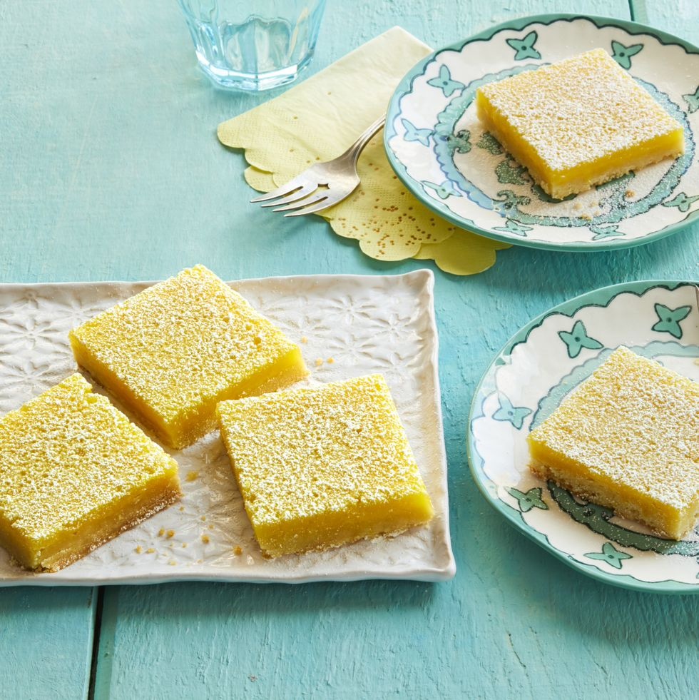

Lemon Bars

Description
I’m a little weird about lemon bars, in that I tend not to
love them if they’re made mostly of lemon filling with a
super thin crust at the bottom. So these have a thicker
cookie-like crust and a not-too-thick layer of filling.
Ingredients
For the crust:
- 2 c. flour
- 1/2 c. sugar
- 1/4 tsp. salt
- 2 sticks (1 cup) salted butter,
cut into small cubes
For the filling:
- 1 1/2 c. sugar
- 1/4 c. flour
- 4 whole large eggs
- Zest and juice of 4 medium-sized lemons
- Powdered sugar, for sifting
Steps
- For the crust: Preheat the oven to 350˚. Grease
a 9-by-13-inch pan with butter. (Use an 8 x 10 pan
if you'd like the layers to be a little thicker.)
- Stir together the flour, sugar, and salt. Add
the butter to the bowl and use a pastry cutter
to cut it all together until the mixture resembles
fine crumbs. Press into the prepared pan and bake
until golden around the edges, about 20 minutes.
- For the filling: Stir together the sugar and flour.
Crack in the eggs and whisk to combine. Add the
lemon zest and juice and mix until combined. Pour
over the crust and bake about 20 minutes.
- Allow to cool in the fridge for a minimum
of 2 hours, then sift powdered sugar over
the top before cutting into squares.